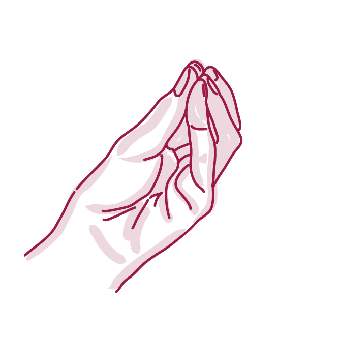
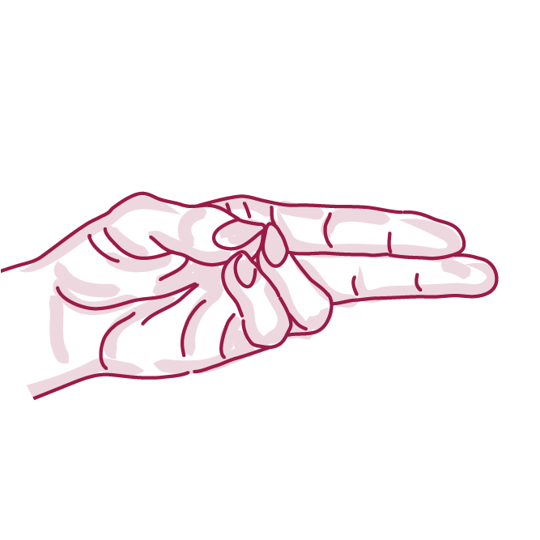
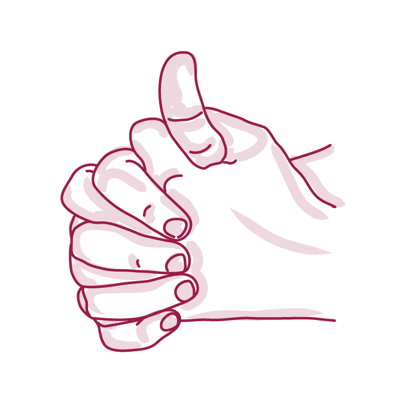
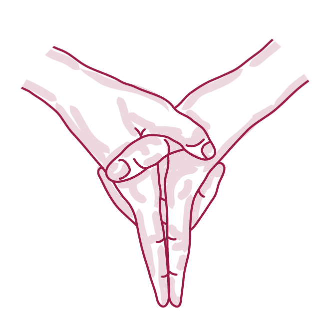
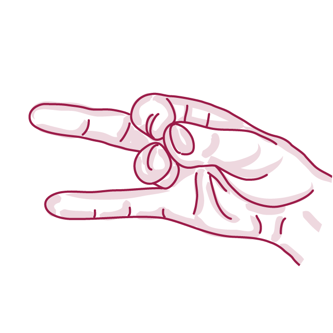

Mudras are ancient, and their origins are a mystery. They have significance in healing, religion, and dance in countries around the world.
Practicing hand mudras may have a beneficial effect on your physical health and emotional well-being.
You can use mudras for immediate results. To help resolve conditions that developed over time, you may need to practice for several weeks.
Energize
Vitality
Chest colds
Manifesting
Letting go
Grounding
Heart health
Be present